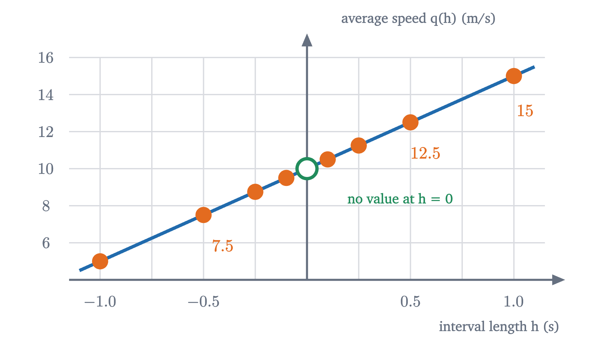

What is a derivative? Speed at a single instant
A falling ball has a speed at every instant, but an instant is too short to measure a speed over. The derivative is the precise idea that resolves this.
Drop a ball and let it fall for two seconds. When you let go it is hardly moving, and by the end it is moving fast enough to hurt. So at each moment in between it had some definite speed, and in particular it had one exactly one second after release. What was it?
The question sounds routine, but try to answer it with the only definition of speed you have. Speed is distance divided by time, which means that measuring it takes two moments: where the ball was then, and where it is now. “Exactly one second after release” is a single moment. During a single moment the ball covers no distance and no time passes, so the recipe asks us to divide zero meters by zero seconds, and that division has no answer.
Yet nobody doubts that the ball has a speed at that moment. A radar gun would report one, and if the ball landed in your hand at that instant, how much it stung would depend on it. So we are sure that a quantity exists while our definition of it refuses to produce a value. The way out is the first real idea of calculus. Newton and Leibniz found it in the seventeenth century, and it took well over a century more to state it in a form that survives every objection.
Average speed is something we can compute
We need a description of the fall to work with. Ignoring air resistance, a ball dropped from rest near the Earth’s surface has fallen approximately
after $t$ seconds. (The true coefficient is closer to 4.9; rounding keeps the arithmetic simple.) One second in, the ball has fallen $s(1) = 5$ meters. Two seconds in, it has fallen $s(2) = 20$ meters. The animation above plots this function: time runs along the bottom, distance fallen goes up the side.
Speed at one moment is out of reach for now, but speed over an interval of time is ordinary arithmetic. Between $t = 1$ and $t = 2$ the ball goes from 5 meters to 20 meters, so it covers 15 meters in 1 second:
This is a true statement about one second of the fall and a poor answer to our question, because the ball was speeding up during that whole second. At $t = 1$ it must have been moving slower than 15 m/s, and at $t = 2$ faster. The average is contaminated by everything that happened after the moment we care about.
If the trouble is that the speed changes during the interval, the repair is a shorter interval, in which it has less time to change.
Over intervals of length 1, 0.5, 0.1 and 0.01 seconds, all starting at $t = 1$, the average speeds in the readout are 15, 12.5, 10.5 and 10.05 meters per second.
Pause and try
Compute the average speed over the interval from $t = 1$ to $t = 1.001$. Before you calculate, write down a guess based on the four values above. (You will need $1.001^2 = 1.002001$.)
Show answerHide answer
At the end of the interval the ball has fallen $s(1.001) = 5 \times 1.002001 = 5.010005$ meters, so it covers $0.010005$ meters in $0.001$ seconds. The average speed is $0.010005 / 0.001 = 10.005$ m/s. Each time the interval shrinks by a factor of ten, the amount by which the average exceeds 10 shrinks by a factor of ten as well: $0.5$, then $0.05$, then $0.005$.
One formula for every interval
The averages are plainly heading for 10. Rather than compute more of them, we can find out why by letting the length of the interval be a variable.
Call that length $h$, and take $h \neq 0$. The interval runs from time $1$ to time $1 + h$, and the average speed over it is the distance covered divided by the time taken:
Expand the square, $(1 + h)^2 = 1 + 2h + h^2$, so the numerator is $5 + 10h + 5h^2 - 5 = 10h + 5h^2$. Both terms that remain contain a factor of $h$, and because $h \neq 0$ we are allowed to divide it out:
This one line reproduces the whole table: $q(1) = 15$, $q(0.5) = 12.5$, $q(0.1) = 10.5$, $q(0.01) = 10.05$, and $q(0.001) = 10.005$ as you found above.
Nothing in the calculation required $h$ to be positive. A negative $h$ describes an interval that ends at $t = 1$ instead of starting there. For instance $h = -0.1$ is the interval from $t = 0.9$ to $t = 1$, over which the formula gives an average speed of $q(-0.1) = 9.5$ m/s. That is below 10, as it should be, since the ball was slower before $t = 1$ than after.

The graph of $q$ is a straight line with one point missing, and the missing point is the one we care about. The expression $10 + 5h$ makes sense at $h = 0$, where it equals 10. But $q(h)$ was defined as a quotient with $h$ in the denominator, and dividing $h$ out was only legitimate for $h \neq 0$, so $q(0)$ does not exist and no simplifying afterwards can bring it into existence. What the simplified formula describes is all the other values: every average speed over an interval with one end at $t = 1$ equals 10 plus a leftover of $5h$, and that leftover can be made as small as we please by taking the interval short enough.
Pause and try
Suppose you want the average speed to be within $0.001$ m/s of 10. How short must the interval be? Does it matter whether the interval comes before or after $t = 1$?
Show answerHide answer
We need $|q(h) - 10| < 0.001$. Since $q(h) - 10 = 5h$, this says $5|h| < 0.001$, that is, $|h| < 0.0002$. Any interval shorter than two ten-thousandths of a second will do, and it makes no difference on which side of $t = 1$ it lies, because only the size of $h$ entered the calculation.
What “closes in on” means
That exercise contains the whole idea. We claimed the averages “close in on” 10, and a skeptic is entitled to ask what that phrase commits us to. It cannot mean that $q(h)$ ever equals 10, because it never does. It cannot merely mean that $q(h)$ gets closer to 10 as a positive $h$ shrinks, because then $q(h)$ also gets closer to 9, and to 0, without those numbers having any claim on it.
What sets 10 apart is that we can meet any demand for closeness. Name a tolerance, however small, and there is a length such that every interval shorter than it has an average speed within your tolerance of 10. The number 9 fails this test: every interval shorter than a tenth of a second has an average speed above 9.5, so a tolerance of 0.5 around 9 cannot be met. Written with the traditional letters, $\varepsilon$ for the tolerance and $\delta$ for the length, this becomes the definition of a limit, which has a lesson of its own.
Read the clauses against what we did. “For every $\varepsilon > 0$” is the skeptic choosing a tolerance. “There is a $\delta > 0$” is our reply, a length that works for that tolerance. The condition $0 < |h|$ excludes $h = 0$, so the definition never asks about $q(0)$ and does not care whether it exists. And $|h| < \delta$ allows $h$ of either sign, so intervals on both sides of the instant are required to agree.
For our function the verification is a single line. Given $\varepsilon > 0$, choose $\delta = \varepsilon / 5$. If $0 < |h| < \delta$, then $|q(h) - 10| = |5h| = 5|h| < 5\delta = \varepsilon$. Hence
One more fact justifies the phrase “the limit”: a function cannot have two different limits at the same point. If it had limits $L \neq L'$, take $\varepsilon$ to be half the distance between them. Sufficiently small $h$ would put $q(h)$ within $\varepsilon$ of both, which is impossible because the intervals of radius $\varepsilon$ around $L$ and $L'$ do not overlap.
The definition of the derivative
We can now say what the speed of the ball at the instant $t = 1$ is. It is 10 meters per second, and the meaning of that statement is: 10 is the limit of the average speeds over intervals with an end at $t = 1$, as the length of the interval approaches zero. We never measure at the instant itself; we measure across short intervals that end there and ask what number those measurements pin down.
You might object that this is a dodge, since we wanted the speed at the instant and have settled for a statement about nearby intervals. But a radar gun, a speedometer and a stinging hand all respond to what the ball does over some very short interval of time; none of them has access to a single instant. “The number that all sufficiently short intervals agree on, to within any tolerance” is the only thing a speed at an instant could mean, and the definition says so openly.
Nothing in the construction was specific to falling or to speed, so it can be stated for any function.
The difference quotient is an average rate of change: the change in the output, $f(a+h) - f(a)$, divided by the change in the input, $h$. The derivative is the instantaneous rate of change. For the ball, $f$ is $s$, the input is time, the output is distance, and the derivative is the speed.
The “if” in the definition leaves open the possibility that the limit does not exist, in which case there is no derivative at that point; we will meet such a function below.
Nor is there any reason to stop at $t = 1$.
At $a = 1$ the theorem gives 10, as before. At $a = 2$ it gives 20, and at $a = 0$, the moment of release, it gives 0. The ball gains 10 meters per second of speed for each second it falls. Galileo reached that law through experiments with balls rolling down ramps; here it has come out of the distance formula by algebra alone.
We began with one function, the distance $s(t) = 5t^2$, and by asking the same question at every instant we produced a second function, the speed $s'(t) = 10t$. The second function is called the derivative of the first, and the process of finding it is called differentiation.
The derivative as a slope
There is a second way to see the number 10, and it is the picture most people carry in their heads.
On the graph of $s$, an average speed is a slope. Pick two points on the curve, at times $1$ and $1 + h$. The distance covered between them is the vertical separation of the points and the time elapsed is the horizontal separation, so the average speed is rise over run: the slope of the straight line through the two points. Such a line is called a secant line, and the difference quotient is its slope.
Shrinking the interval slides the second point along the curve toward the first. The secant line pivots as it goes, and its slope has a limit.
The line through the point $(1, 5)$ whose slope is that limit is called the tangent line. The definition is general.
For the ball at $a = 1$ the tangent line is $y = 5 + 10(t - 1)$. Notice that the definition does not say “the line that touches the curve at one point”. That description, which works for circles, is neither precise nor true in general: a tangent line can cross the curve elsewhere, and at some points it even crosses the curve at the point of tangency.
So the derivative has two readings, and they are the same number: the rate at which the output is changing at one input, and the slope of the graph at one point. The second reading explains why the first is reasonable. Zoom in on the graph at $(1, 5)$, with a grid so that slopes can be read off.
Under magnification the curve becomes indistinguishable from a straight line, and the grid measures that line: one cell up for each cell across, with cells ten times as many meters tall as seconds wide, so the slope is 10 meters per second. A curve that looks straight over a tiny interval is behaving, over that interval, like an object moving at a steady speed. The tangent line is that steady motion continued in both directions.
We can make “indistinguishable” precise with what we already know. The gap between the curve and its tangent line at time $1 + h$ is
At $h = 0.1$ the gap is 0.05 meters. At $h = 0.01$ it is 0.0005 meters. When the horizontal distance from the point shrinks by a factor of 10, the gap shrinks by a factor of 100. That is why zooming flattens the curve onto the line: the screen is magnified in proportion to $1/h$, while the gap shrinks like $h^2$.
Pause and try
The tangent line predicts the ball’s position a short time after $t = 1$. Use it to estimate $s(1.2)$, then compute the true value. How large is the error, and does it match the formula $5h^2$?
Show answerHide answer
The tangent line gives $5 + 10(0.2) = 7$ meters. The true value is $s(1.2) = 5 \times 1.44 = 7.2$ meters. The error is $0.2$ meters, and $5h^2 = 5 \times 0.04 = 0.2$. The tangent line underestimates because the ball keeps accelerating after $t = 1$.
Notation
Two notations for the derivative are in common use.
The prime notation, usually credited to Lagrange, writes the derivative of $f$ as $f'$, so that $f'(a)$ is its value at $a$. It is compact and makes clear that the derivative is itself a function.
The notation of Leibniz starts from the difference quotient. Write $\Delta t$ for a change in $t$ (the letter $\Delta$ is read “change in”) and $\Delta s$ for the corresponding change in $s$. An average rate is then $\Delta s / \Delta t$, and for its limit Leibniz wrote
So $\frac{ds}{dt} = 10t$ says the same thing as $s'(t) = 10t$. The Leibniz form keeps the units visible, since meters over seconds gives meters per second, and it will make several later rules easy to remember. But $\frac{ds}{dt}$ is one symbol for a limit, and $ds$ and $dt$ are not two numbers being divided: in the definition nothing is ever divided by zero, and nothing “infinitely small” appears.
Worked examples
The definition is also a method: write the difference quotient, simplify it until the $h$ in the denominator cancels, and then take the limit.
Put the three results side by side: the derivative of $x^2$ is $2x$, of $x^3$ is $3x^2$, and of $x^{-1}$ is $-x^{-2}$. There is a pattern, and the next lesson explains it.
When there is no derivative
The definition said “if the limit exists”. Here is the standard example in which it does not. Let $f(x) = |x|$, the absolute value of $x$, and look at $a = 0$. The difference quotient is
which equals $1$ whenever $h > 0$ and $-1$ whenever $h < 0$.
No number $L$ can be the limit. If one were, then taking $\varepsilon = 1$ would give a $\delta$ such that every $h$ with $0 < |h| < \delta$ has $\left|\frac{|h|}{h} - L\right| < 1$. A small positive $h$ would force $|1 - L| < 1$, so $L > 0$; a small negative $h$ would force $|-1 - L| < 1$, so $L < 0$. Both cannot hold. So $|x|$ is not differentiable at 0, and its graph has no tangent line there. Geometrically the graph has a corner, and zooming in on a corner never straightens it out.
A break in the graph is another way to fail, and the following theorem shows that it always destroys the derivative.
The converse is false, and $|x|$ is the witness: it is continuous at 0 and not differentiable there. Differentiability asks that the graph be unbroken and, in addition, that it have a single well-defined direction at the point.
Check yourself
For a different falling object, the distance fallen after $t$ seconds is $s(t) = 3t^2$ meters. What is its speed at $t = 2$?
Problems
Work these with pencil and paper before opening the solutions. The first three repeat the moves of the lesson, the next four ask you to combine them, and the last two go a little beyond it.
Problem 1
For the ball with $s(t) = 5t^2$, find the average speed over the interval from $t = 2$ to $t = 2.5$, and the speed at the instant $t = 2$. Which is larger, and why must it be?
Show solutionHide solution
$s(2) = 20$ and $s(2.5) = 5 \times 6.25 = 31.25$, so the average speed is $\frac{31.25 - 20}{0.5} = 22.5$ m/s. The speed at $t = 2$ is $s'(2) = 10 \times 2 = 20$ m/s. The average is larger because the ball speeds up throughout the interval, so at every later moment in it the ball is moving faster than it was at the start.
Problem 2
Let $f(x) = 7x - 4$. Compute $f'(a)$ from the definition. Explain the answer in terms of the graph of $f$.
Show solutionHide solution
The difference quotient is $\frac{7(a+h) - 4 - (7a - 4)}{h} = \frac{7h}{h} = 7$ for every $h \neq 0$. A function that is constantly 7 has limit 7 (any $\delta$ works for any $\varepsilon$), so $f'(a) = 7$ for all $a$. The graph is a straight line of slope 7. Every secant line of a straight line is the line itself, and so is the tangent line at each point.
Problem 3
Find the equation of the tangent line to $y = x^2$ at the point $(-1, 1)$.
Show solutionHide solution
The difference quotient of $x^2$ at $a$ is $\frac{(a+h)^2 - a^2}{h} = 2a + h$, with limit $2a$. At $a = -1$ the slope is $-2$. The line through $(-1, 1)$ with slope $-2$ is $y = 1 - 2(x + 1)$, that is, $y = -2x - 1$. Check: at $x = -1$ it gives $2 - 1 = 1$, as required.
Problem 4
Let $f(x) = x^2 + 3x$. Find $f'(a)$ from the definition, including an $\varepsilon$–$\delta$ verification of the limit.
Show solutionHide solution
$f(a+h) - f(a) = a^2 + 2ah + h^2 + 3a + 3h - a^2 - 3a = 2ah + h^2 + 3h$. Dividing by $h \neq 0$ gives $2a + 3 + h$. Given $\varepsilon > 0$, let $\delta = \varepsilon$; if $0 < |h| < \delta$ then $|(2a + 3 + h) - (2a + 3)| = |h| < \varepsilon$. So $f'(a) = 2a + 3$. Observe that this is the derivative of $x^2$ plus the derivative of $3x$.
Problem 5
On the Moon a dropped object falls approximately $s(t) = 0.8t^2$ meters in $t$ seconds. Find its speed at time $t$. When is it falling at 8 m/s, and how far has it fallen by then?
Show solutionHide solution
The difference quotient at $a$ is $\frac{0.8(a+h)^2 - 0.8a^2}{h} = 1.6a + 0.8h$, with limit $1.6a$. So the speed at time $t$ is $1.6t$ m/s. It equals 8 when $t = 5$ seconds, at which point the object has fallen $s(5) = 0.8 \times 25 = 20$ meters.
Problem 6
Using only the $\varepsilon$–$\delta$ definition, prove that $\lim_{h \to 0} (3 - 2h) = 3$. Then explain why the same function does not have limit $3.1$.
Show solutionHide solution
Given $\varepsilon > 0$, let $\delta = \varepsilon / 2$. If $0 < |h| < \delta$ then $|(3 - 2h) - 3| = 2|h| < 2\delta = \varepsilon$. For the second part, take $\varepsilon = 0.05$. Whatever $\delta > 0$ is proposed, choose $h$ with $0 < |h| < \delta$ and also $|h| < 0.01$. Then $3 - 2h$ lies between $2.98$ and $3.02$, so its distance from $3.1$ is at least $0.08$, which is not less than $0.05$. No $\delta$ works for this $\varepsilon$, so $3.1$ is not the limit.
Problem 7
Let $f(x) = \sqrt{x}$ and let $a > 0$. Show that the difference quotient equals $\dfrac{1}{\sqrt{a+h} + \sqrt{a}}$, and deduce $f'(a)$. What happens to the quotient at $a = 0$ as $h \to 0$ through positive values?
Show solutionHide solution
Multiply numerator and denominator by $\sqrt{a+h} + \sqrt{a}$:
As $h \to 0$, $\sqrt{a+h}$ approaches $\sqrt{a}$ (the square root function is continuous), so the quotient approaches $\frac{1}{2\sqrt{a}}$. Hence $f'(a) = \frac{1}{2\sqrt{a}}$ for $a > 0$. At $a = 0$ the quotient is $\frac{\sqrt{h}}{h} = \frac{1}{\sqrt{h}}$, which grows without bound as $h \to 0^+$: for $h = 0.0001$ it is already 100. So there is no limit, and $\sqrt{x}$ is not differentiable at 0. The graph is vertical there.
Problem 8
The function $f(x) = x\,|x|$ involves an absolute value. Is it differentiable at 0? Decide from the definition.
Show solutionHide solution
The difference quotient at 0 is $\frac{h|h| - 0}{h} = |h|$ for $h \neq 0$. Given $\varepsilon > 0$, take $\delta = \varepsilon$: if $0 < |h| < \delta$ then $\bigl||h| - 0\bigr| = |h| < \varepsilon$. So the limit exists and $f'(0) = 0$. Its graph is $x^2$ for $x \ge 0$ and $-x^2$ for $x < 0$, two parabolic arcs that meet at the origin with the same slope, 0, so there is no corner. Whether a derivative exists is settled by the limit, not by the look of the formula.
Problem 9
Some calculators estimate derivatives with the symmetric quotient $\dfrac{f(a+h) - f(a-h)}{2h}$. (a) Compute it for $s(t) = 5t^2$ and compare with $s'(a)$. (b) Compute it for $f(x) = |x|$ at $a = 0$. (c) What does (b) tell you about using the symmetric quotient as a definition of the derivative?
Show solutionHide solution
(a) $5(a+h)^2 - 5(a-h)^2 = 5\,(4ah) = 20ah$, so the symmetric quotient is $\frac{20ah}{2h} = 10a$ exactly, for every $h \neq 0$. It equals $s'(a)$ with no leftover at all, which is why it is popular for numerical work. (b) $\frac{|h| - |-h|}{2h} = \frac{0}{2h} = 0$ for every $h \neq 0$, so its limit is 0. (c) The symmetric quotient has a limit at a point where $|x|$ has no derivative. It averages the slopes on the two sides, and so it cannot detect that they disagree. A definition based on it would assign a “slope” of 0 to a corner, where the graph has no tangent line. The quotient in the definition of the derivative demands agreement from both sides.